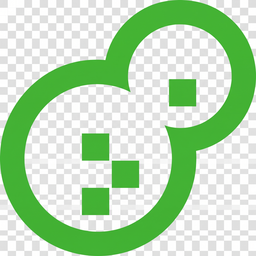
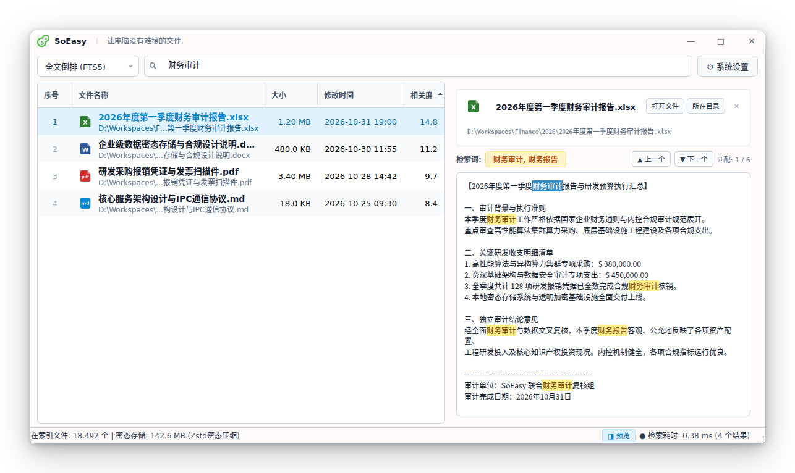

SoEasy Native C++17
基于现代 C++ 与 Qt 架构，支持文件名与全文内容极速秒搜，沙箱多进程隔离防卡死。
深度覆盖文档、代码与图文扫描件，硬件绑定本地透明加密，检索毫秒即搜即览。

基于现代 C++17 与高性能系统工程实践，为本地内容检索提供坚固底层支持。
解析子进程 (soeasy-worker) 与主服务物理隔离，引入现代进程库 reproc++ 严格治理生命周期，杜绝僵死进程 (<defunct>)。Linux 下采用抽象命名空间套接字零磁盘残留。遇死循环或格式损坏，看门狗毫秒级强杀自愈，界面零卡死。
35 万词词典预编译为双数组字典树 (DAT) 二进制文件，运行时通过 mmap 零拷贝映射入内核只读页，堆内存占用从 120MB 直降至 7MB，实现瞬间冷启动，并提供 Overlay 叠加层无缝支持用户动态添加自定义专有名词。
绝不联网上云，零遥测，保护商业机密与个人隐私。底层基于 SQLite3MultipleCiphers 对索引数据库实施透明页级 AES-128 强加密，抽取正文全部经过 Facebook Zstandard (Level 3) 实时高压缩比落盘。
文档内嵌图片流式回传 PP-OCRv6 原位提取；独创 Header Probe 零拷贝尺寸嗅探 (<1µs) 拦截微型装饰图；双档位分辨率限边 (736/640) 内存立减 34%、提速超 40% 且精度无损；配合 mallopt(M_ARENA_MAX, 2) 彻底遏制内存碎片。
全面解析主流办公、源码工程、版式文档与图片扫描件，无缝提取正文内容。